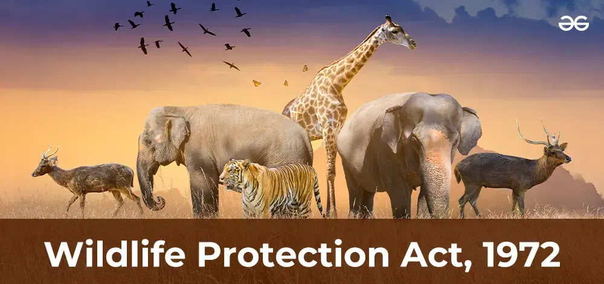
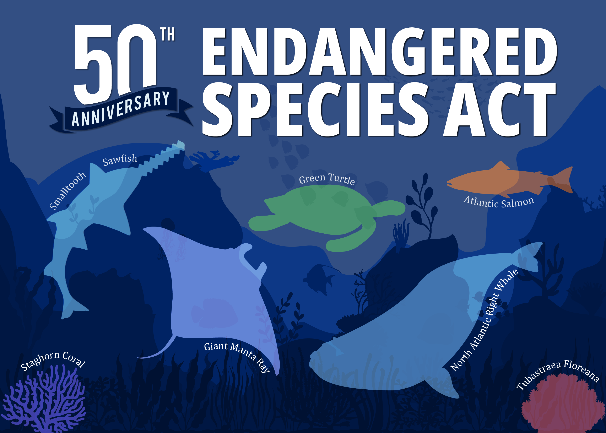
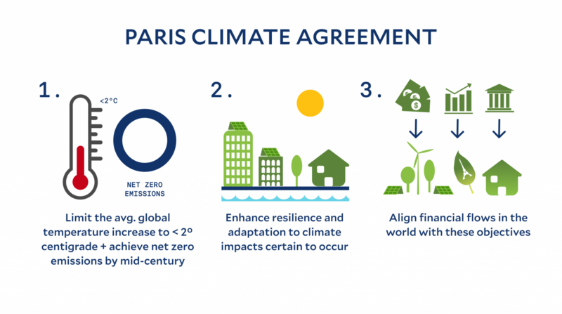
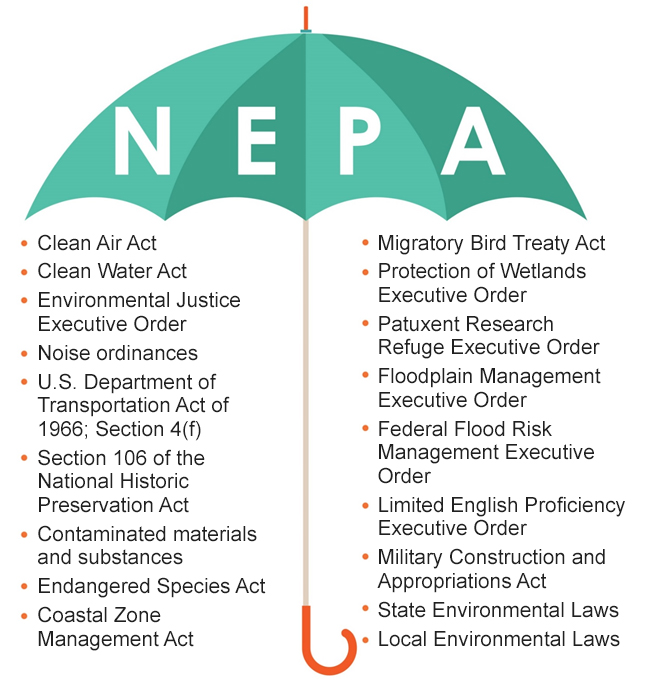

Wildlife Protection Act (India)
The Wild Life (Protection) Act, of 1972 provides a legal framework for the protection of various species of wild animals and plants, management of their habitats, regulation, and control of trade in wild animals, plants, and products made from them
The act also lists schedules of plants and animals that are afforded varying degrees of protection and monitoring by the government.
India's entry to the CITES (Convention on International Trade in Endangered Species of Wild Fauna and Flora) was made easier by the Wildlife Act.
Earlier, Jammu and Kashmir was not covered by the Wildlife Protection Act of 1972. The Indian Wildlife Protection Act now applies to J&K as a result of the reorganisation act.
.jpg)
Clean Air Act (USA)
The Clean Air Act (CAA) is the United States' primary federal air quality law, intended to reduce and control air pollution nationwide. Initially enacted in 1963 and amended many times since, it is one of the United States' first and most influential modern environmental laws. The Clean Air Act, is a comprehensive law that regulates air emissions from stationary and mobile sources. It has significantly improved air quality across the U.S.

Endangered Species Act (USA)
The US Endangered Species Act (ESA) is USA’s most effective law to protect at-risk species from extinction, with a stellar success rate: 99% of species listed on it have avoided extinction.
Passed with bipartisan support on Dec. 28, 1973, the law allows individuals and organizations to petition to have a species listed as endangered or threatened. These listing petitions undergo rigorous scientific evaluation and public review before a final decision is made on whether a species should be protected. The law requires protection for critical habitat areas and the development and implementation of recovery plans for listed species. It also allows for flexibility in its implementation, requiring coordination among federal, state, tribal, and local officials on efforts to prevent extinction.

Paris Agreement (Global)
The Paris Agreement (also called the Paris Accords or Paris Climate Accords) is an international treaty on climate change that was signed in 2016.[3] The treaty covers climate change mitigation, adaptation, and finance. The Paris Agreement was negotiated by 196 parties at the 2015 United Nations Climate Change Conference near Paris, France. As of February 2023, 195 members of the United Nations Framework Convention on Climate Change (UNFCCC) are parties to the agreement. Of the three UNFCCC member states which have not ratified the agreement, the only major emitter is Iran.

National Environmental Policy Act (USA)
The National Environmental Policy Act (NEPA) is a United States environmental law designed to promote the enhancement of the environment. It created new laws requiring U.S. federal government agencies to evaluate the environmental impacts of their actions and decisions, and it established the President's Council on Environmental Quality (CEQ). The Act was passed by the U.S. Congress in December 1969 and signed into law by President Richard Nixon on January 1, 1970. To date, more than 100 nations around the world have enacted national environmental policies modeled after NEPA.